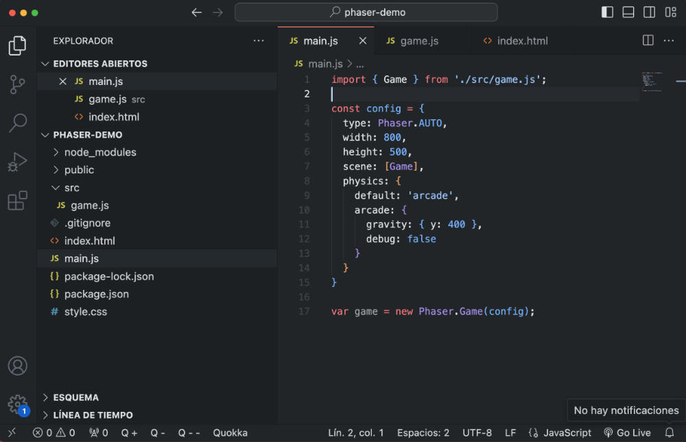

El desarrollo web es la columna vertebral de internet. HTML5 proporciona la estructura semántica necesaria para que los motores de búsqueda entiendan el contenido, mientras que las nuevas herramientas permiten crear experiencias de usuario rápidas, accesibles y adaptables a cualquier dispositivo.
¿Por qué aprender HTML5 y CSS3 hoy en día?
Recursos Visuales y Enlaces

Si quieres profundizar más en el aprendizaje de estas tecnologías, puedes visitar el siguiente enlace:
Visitar MDN Web Docs (Documentación Oficial)